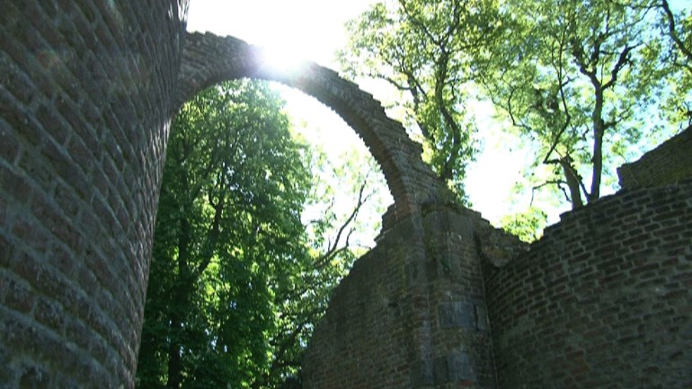

Geschiedenis van Landgoed de Fliergoed.
De camping bevindt zich op het terrein van de wilgenboerderij van het oude landgoed de Fliergoed. Dit landgoed stamt uit 1790. Van het oude gebouw en de andere bebouwing zijn alleen nog ruines over. Op verschillende plaatsen in het gebied zijn de overblijfselen van de geschiedenis te vinden.

1790
De rijke familie Fierstens zoek een buitenverblijf. Dit heeft ook te maken met de zwakke gezondheid van de oudste zoon Willem. Willem is vaak ziek en de doktoren raden aan een plaats buiten de stad te zoeken waar Willem bij kan komen. Ernes de vader van Willem vindt een stuk bos en veen dat nog niet ontgonnen is. Verhalen en oude legendes over het gebied ziet hij als onzin. Al snel wordt begonnen met de bouw van het landhuis of "state" Tijdens de bouw van de state en de bijbehorende gebouwen is het lastig om genoeg medewerkers te vinden. Verschillende bouwvakkers verdwijnen tijdens de bouw.
1805
De state is af in 1805. de familie en het personeel komen in de zomer van dit jaar naar het landgoed. Het lijkt beter te gaan met Willem in de Drentsche lucht. In de notities van Ernes is terug te lezen dat het beter gaat met het gezin. Hij noteert ook dat het 's avonds wel heel lastig is om de honden stil te krijgen. Ze blijven telkens aanslaan. De landmeester en een paar bedienden zoeken of ze iets kunnen vinden. Ze vinden niets. De familie woont een aantal jaren zonder bijzonderheden op de state. In de notities van Ernes staat wel dat de honden een verblijf wat verder van het huis af krijgen. Ook schrijft hij over lichten in het bos.Let op, in de onderstaande tekst moet een 'f' soms gelezen worden als 's'.
18 february 1815
Meyn "kameraad van verreweg" vertelde my over de famenftelling van de deeltjes in het univerfvm. Deze kennis bezit zijn volk al fynds tientallen eeuven segt hy. Ook deze onzychbare deeltjes sein wederom opgedeeld in [nog?] kleynere delen die trillen volgens de mufiek van het uni... (laatste deel onleesbaar, vermoedelijk "univerfum") Het opmerkelijke aan dit segment is dat Willem lijkt te spreken over sub-atomaire deeltjes, die wij slechts kennen sinds deze suggestie werd voorgesteld door Murray Gell-Mann in 1964. Verder is het volledig onduidelijk wie deze "kameraad van verweg" is. Vanwege de afgelegen locatie ontving de familie weinig bezoek. https://en.wikipedia.org/wiki/Murray_Gell-Mann
1839
Vader Ernes is ondertussen op leeftijd en Willem zal voortaan het bijhouden van het familieboek voor zijn rekening nemen. Aan het eind van dit jaar overlijd Ernes waardoor Willem en zijn moeder Eloise alleen achterblijven op het landgoed. Er ontstaan spanningen tussen die twee omdat Willem zijn vader een "luchtbegravenis" wil geven. Vader Ernes' lichaam wordt geplaatst op een grote steen midden in het bos. Waarna de familie en bedienden zich terugtrekken in het landgoed. De lichten in het bos zijn die nacht door dappere bedienden gezien door de ramen. De meesten zaten vooral te bidden in de kapel. Het lichaam van Ernes wordt niet meer teruggevonden. Maar Willem lijkt daar redelijk nuchter over.
1842
Als Eloise ernstig ziek wordt laat zij zich in het geheim door enkele bedienden vervoeren naar haar familie in Amsterdam, zodat zij volgens haar eigen woorden "wel een christelijke begrafenis" kan krijgen. Daardoor blijft Willem alleen achter met een aantal bedienden. De notities in het familieboek worden langzaam zeldzamer. Zo nu en dan lijkt Willem te schrijven over een bijzonder inzicht dat hij ontvangen heeft, maar zijn woorden, en de zinsopbouw, worden steeds onduidelijker. In steeds meer notities komen vreemde symbolen voor. (Taaldeskundigen geven aan dat deze niet voorkomen in de bekende talen zoals grieks, russisch of zelfs aramees.)
1921
Het einde van Willems leven wordt niet beschreven in het familieboek. In dit jaar wordt door het bestuur van de provincie Drenthe het landhuis als onbewoonbaar verklaard. Het staat dan al vele jaren leeg als door een bliksem inslag de zuidelijke vleugel in de as gelegd wordt. Na deze gebeurtenis worden verschillende documenten en kunstvoorwerpen vervoerd naar het gemeentehuis van Beilen om ze daar te bewaren. Er is nog gesproken met het gezin dat op dat moment de Wilgenhoeve beheerde, maar zij wilden niks met deze voorwerpen te maken hebben. Het enige dat zij kwijt willen over de situatie is dat er niks aan de hand is.